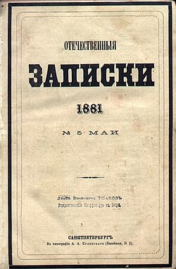

1868 — Перезапуск Некрасовым
- Журнал переходит под фактическое управление Н. А. Некрасова.
- Радикальное обновление структуры и авторского состава.
- Резкий рост популярности и подписки.
- Первые сигналы тревоги в Совете по делам печати.
Интерактивное расследование

«Отечественные записки» были одним из ведущих литературно-публицистических журналов XIX века, объединившим крупнейших русских писателей, критиков и ученых. Он стал центром демократической мысли, развивал социальную журналистику, поддерживал народнические идеи и сформировал целое направление общественной критики, оказав огромное влияние на русскую литературу и культуру своего времени.
Журнал был центром демократической мысли, привлекал лучших писателей, и именно поэтому стал объектом охоты цензуры.
Статья, сопоставившая цензурные системы Европы и России и поставившая вопрос о том, может ли «направление издания» быть поводом для судебного преследования.
В рапорте Ф. М. Толстого отмечалось, что статья «как бы восстанавливает знамя бывшего “Современника”» — то есть продолжает традиции уже закрытого оппозиционного журнала. Для цензоров это был сигнал о прямой идеологической преемственности.
Критика идеализма и пассивности «антинигилистов», а также поверхностного отношения к новым идеям в русской литературе.
Статья была опасна для цензуры тем, что давала голос новой социальной критике, подрывающей авторитет «официальной» литературы и подталкивающей читателя к активному переустройству действительности.
Сатирические очерки о провинциальной России, где показывается умственная и нравственная стагнация, продолжение крепостнических порядков и искусственное существование интеллигенции.
Для цензоров сатирический язык Салтыкова-Щедрина был особенно опасен: он позволял обходить прямые запреты и одновременно создавать яркие, легко запоминающиеся образы социального зла.
Представим, что перед нами — папка следователя. Внутри неё — рапорты, вырезки, предупреждения и заметки чиновников, шаг за шагом подводящие к закрытию журнала.
Со временем в отчетах все меньше говорили о конкретных статьях и все больше — о направлении журнала в целом, что облегчало путь к его ликвидации.
20 апреля 1884 года на совещании министров внутренних дел, народного просвещения, юстиции и обер-прокурора Синода было принято решение: дальнейшее существование журнала «Отечественные записки» признано недопустимым.
В официальной формулировке говорилось, что журнал «открывает свои страницы распространению вредных идей» и «поддерживает революционный дух», а среди ближайших сотрудников находятся люди, причисленные к тайным обществам. Так цензура поставила точку в истории одного из самых влиятельных демократических изданий России.
Закрытие «Отечественных записок» ознаменовало конец целой эпохи. Последний в России радикально-демократический «толстый» журнал был ликвидирован, и царская цензура одержала громкую победу над печатью.
Многие литераторы остались без трибуны; Салтыков-Щедрин, хотя и тяжело больной, продолжал писать в чуждых ему изданиях, вынужденно печатаясь в более умеренных журналах. Он ясно понимал замысел властей: заставить его и других прогрессивных авторов замолчать.
Тем не менее значение журнала было огромным. Как писал Щедрин, он «представлял собою дезинфицирующее начало в русской литературе», очищавшее ее от застоя и лицемерия. История «Отечественных записок» осталась в памяти как пример самоотверженной борьбы русской печати за право говорить правду.
Для тех, кто хочет углубиться в тему, можно собрать отдельную подборку материалов: